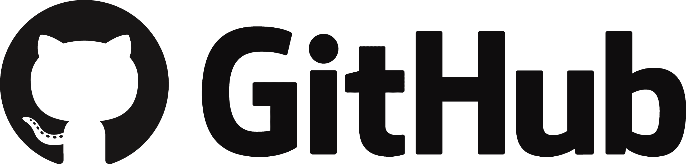

ABOUT US
About the Project
Rooster Run has been developed and maintained by 9 Computer Science
undergraduate students at Aston University. Rooster Run offers a fun and
interactive multiplayer which is aimed at audiences aged 7-15 years. The
game offers bright colours and blocky text to entice its audiences, with
the built-in multiplayer player mode offering you the ability to play
with your family and friends.
The Rooster Run storyline comes from the idea of Roosters planning their
escape from a Barn or a Slaughterhouse, the Roosters must compete
against each other to escape, the Airplane at the end of the map only
offers one seat so the first rooster to get there wins freedom and the
others will be Sunday roast.
Rooster Run offers powerups such as lighting to increase speed and
power-downs such as mud to slow the player down. The game also allows
the collection of coins that can save your life as you run across the
map. Rooster run will be available to our players on the
1st April 2021 with the ability to create lobbies
and share them with your friends to join and compete against each other.
Rooster Run makes use of the java language with libraries such as LibGDX
and Kryonet being used in the development of the game and networking.
GitHub has also been used extensively during the development process to
offer a workspace that allows developers to collaborate on coding
projects in addition to maintaining versioning control. Google cloud has
also been used to host our Kryonet Server which allows players to join
and play aginst eachother from all locations.
libGDX is a cross-platform Java game development framework based on
OpenGL (ES) that works on Windows, Linux, macOS, Android, your browser
and iOS. libGDX provides a well-tried and robust environment for rapid
prototyping and fast iterations. libGDX does not force a specific design
or coding style on you; it rather gives you the freedom to create a game
the way you prefer.
KryoNet is a Java library that provides a clean and simple API for
efficient TCP and UDP client/server network communication using NIO.
KryoNet uses the Kryo serialization library to transfer object graphs
automatically and efficiently across the network. KryoNet runs on both
the desktop and on Android.
The game server is hosted on the Google cloud platform.

GitHub, Inc. is a provider of Internet hosting for software development
and version control using Git. It offers the distributed version control
and source code management functionality of Git, plus its own
features.

Google Cloud Platform is a provider of computing resources for deploying
and operating applications on the web. Its specialty is providing a
place for individuals and enterprises to build and run software, and it
uses the web to connect to the users of that software.